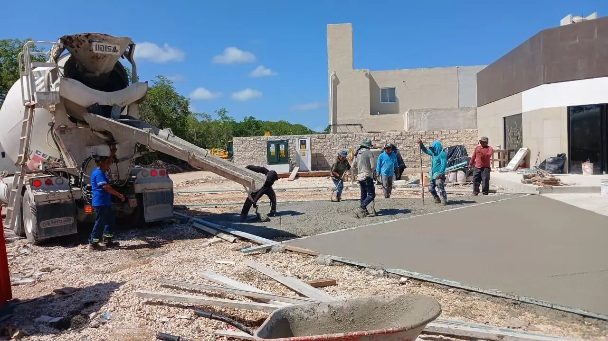

Types de béton pour la construction dans la Riviera Maya
Calcaire, salinité et cyclones exigent des bétons haute résistance avec adjuvants. Un mauvais choix peut coûter 10 000+ USD de réparations.

Les types utilisés
- Prêt à l'emploi (premezclado) — f'c 200–300 kg/cm², livré par camion : le standard résidentiel
- Projeté (shotcrete/gunite) — piscines et murs de soutènement
- Léger — étages supérieurs, réduit la charge structurelle
- Autoplaçant (SCC) — formes complexes à armature dense
Résistances requises
| Élément | f'c minimum |
|---|---|
| Fondations | 250 kg/cm² |
| Poteaux et poutres (anticyclonique) | 250–300 |
| Dalles | 200–250 |
| Coques de piscine | 250 + adjuvant hydrofuge |
Prix 2026
Prêt à l'emploi livré : 2 800–3 500 MXN/m³ à Playa del Carmen, 3 000–4 000 à Tulum. Pompage étages : +1 500–3 000 MXN. Fibré : +300–500 MXN/m³. Une maison de 150 m² consomme 80–120 m³.
Les deux ennemis tropicaux
- Fissuration de retrait (chaleur 35 °C) — cure humide 7+ jours, coulage tôt le matin, joints tous les 3 m, treillis fibré
- Corrosion saline des armatures — enrobage 3 cm minimum, revêtement anticorrosion en front de mer, béton haute densité. C'est le problème n°1 de qualité long terme sur la côte.
Rapport eau-ciment et adjuvants : le vrai sujet
Dans la Riviera Maya, le béton travaille en milieu agressif : chlorures de l'air marin, humidité élevée, et des températures qui accélèrent la prise au-delà de la normale. Le « béton tout court » n'existe pas ici.
- f'c 200 kg/cm² : minimum pour les éléments non structurels, dallages sur terre-plein et trottoirs.
- f'c 250 : la classe de travail pour fondations, poteaux et planchers d'une maison à l'intérieur des terres.
- f'c 300 et plus : zone littorale, piscines, murs de soutènement et grandes portées.
Plus important que la résistance : le rapport eau-ciment. Au-delà de 0,5, le béton est poreux et les chlorures atteignent l'acier en quelques années, quelle que soit la f'c annoncée. En bord de mer, la cible est 0,40 à 0,45, ce qui impose presque toujours un adjuvant — sans lui, le béton n'est pas maniable.
Les adjuvants réellement utiles ici : superplastifiant (maniabilité à faible rapport E/C), retardateur de prise pour les coulages de journée en saison chaude, inhibiteur de corrosion en chantier littoral, et hydrofuge de masse pour citernes et murs enterrés. À éviter absolument : le chlorure de calcium comme accélérateur, qui attaque directement les armatures.
Point pratique : exigez le bon de livraison de chaque toupie et le prélèvement d'éprouvettes. Sur les chantiers où le béton est gâché sur place, l'écart de résistance entre gâchées atteint 40 %.
Couler par forte chaleur et curer correctement
La majorité des désordres de béton au Quintana Roo ne viennent pas de la formulation mais de la cure. À 33 °C et en plein soleil, la surface perd son eau plus vite que l'hydratation ne progresse, et le faïençage de retrait plastique apparaît avant que l'élément ait atteint sa résistance.
Ce qui fait la différence :
- L'heure du coulage. Les dalles se coulent tôt, pour terminer avant midi. Couler à quatorze heures en mai, c'est programmer des fissures.
- Humidifier support et coffrage avant mise en œuvre : le bloc sec pompe l'eau du béton.
- Cure d'au moins sept jours : arrosage permanent, bâchage ou produit de cure. C'est la façon la moins chère de gagner 20 à 30 % de résistance réelle.
- Vibration, pas piquage. Les vides sous les armatures sont la porte d'entrée de la corrosion.
- Reprises de bétonnage à des emplacements décidés à l'avance, avec nettoyage et barbotine d'accrochage.
En saison des pluies s'ajoute le problème inverse : il faut protéger le béton frais de l'averse, qui lessive la laitance de surface. Une bâche sur la zone coulée coûte trois fois rien et sauve la dalle.
Si l'entreprise n'a pas inscrit la cure comme une tâche du planning, ce qu'elle a planifié, ce sont des fissures.
Questions fréquentes
Prêt à lancer votre projet ?
196+ projets réalisés. Contrats à prix fixe. Devis gratuit sous 48 h.
Devis gratuit